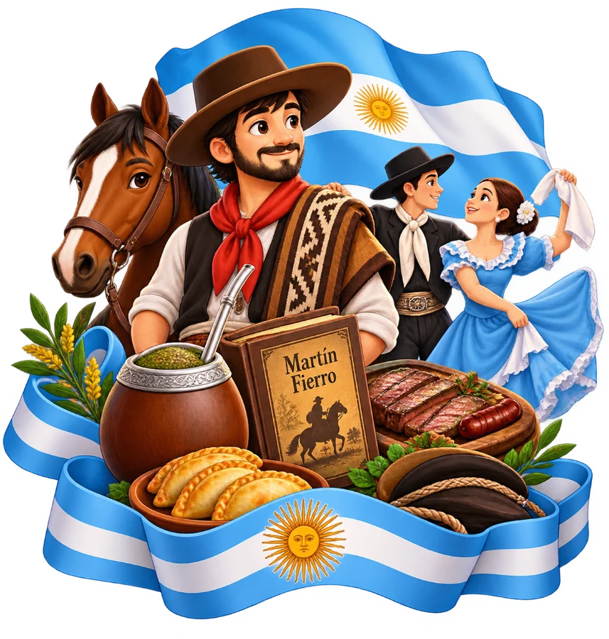
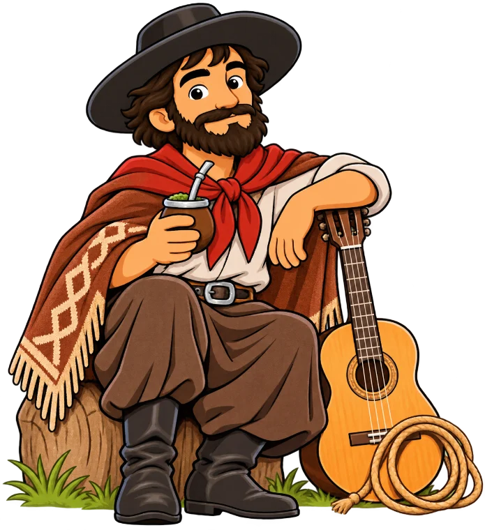
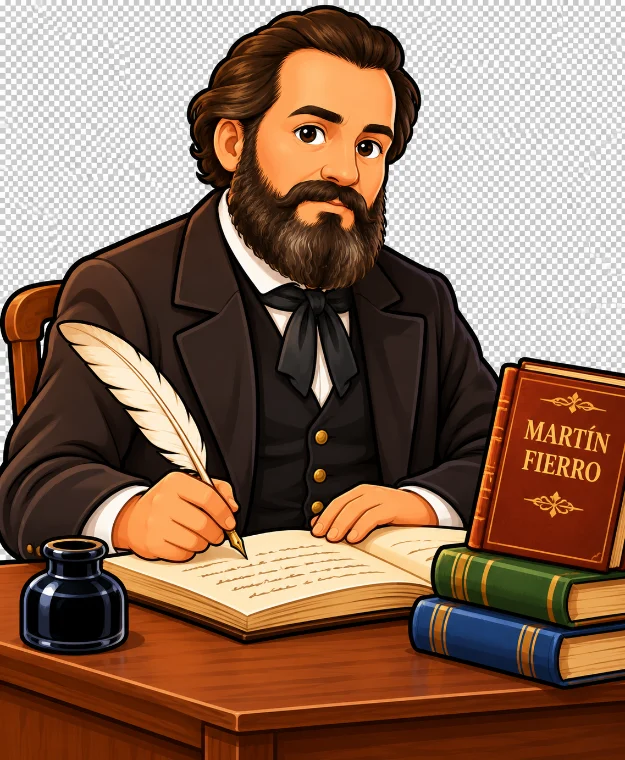

Elegí por dónde empezar: un cuento, un juego o una aventura por el campo.

Pensada para el aula y para casa
6 misiones narradas por Martín Fierro y José Hernández.
Organizados por ciclo: primer ciclo, segundo ciclo, aula para todos y escuchar y tocar.
Cada juego terminado regala una figurita. ¡Completalo!
Premios por avanzar y un diploma para imprimir con el nombre.
Lectura en voz alta, texto grande, alto contraste, modo calmo y apoyo visual.
Se instala como una app y funciona sin internet.
Los guías del Modo Historia

Martín Fierro
José HernándezPor ciclo y para cada forma de aprender
Esta es la demo: algunos juegos están abiertos para que la conozcas
Después de la compra la abrís desde Mi biblioteca en cofredidactico.com.ar, o con el código de acceso que te enviamos.
Sí: celular, tablet, compu y pantallas del aula. También se instala como una app y funciona sin internet.
Tiene lectura en voz alta, texto grande, alto contraste, modo calmo y una sección "Aula para todos" con actividades simples y mucho apoyo visual.
Sí: la ruleta de preguntas y los juegos están pensados para proyectar y jugar por equipos.